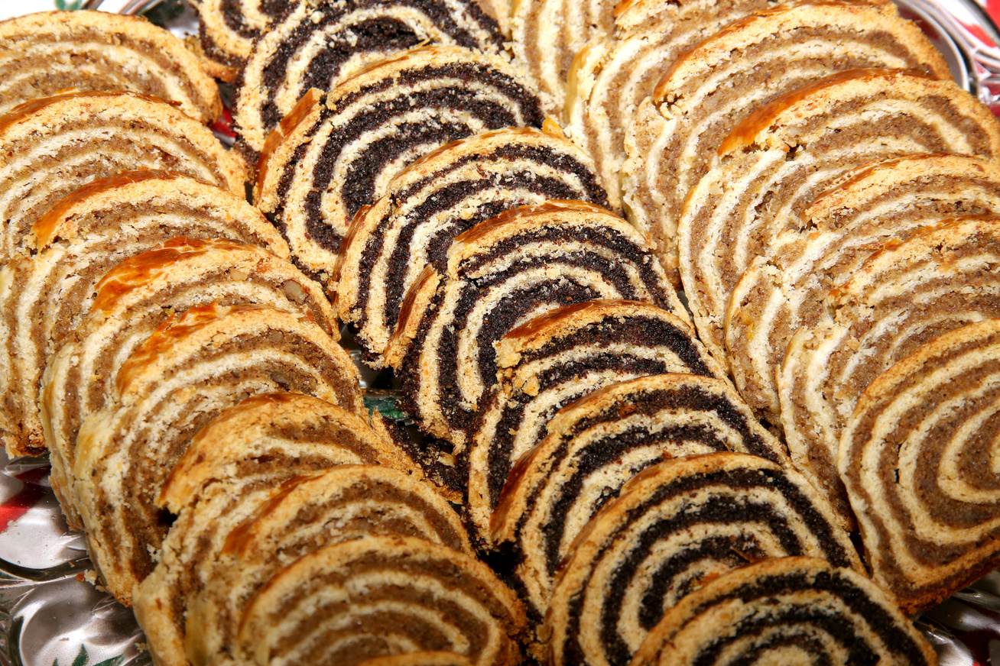

Bejgli
A bejgli magyar nevén mákos vagy diós tekercs, tradicionális magyar karácsonyi étel, hagyományosan dióval vagy mákkal, újabban gesztenyével, meggyel vagy aszalt szilvával töltött édesség, de létezik meggyes-mákos, gesztenyés-szilvás, almás-mákos és káposztás változata is.
A népi hiedelem szerint a diót rontás ellen kell enni, a mák pedig bőséget hoz a házhoz. A bejgli tésztája a kalácsfélékhez hasonlóan egy kelttészta, amelynek elkészítéséhez tejben felfuttatott élesztőt használnak.

Hozzávalók
- 45 dkg liszt
- 6 dkg zsír
- 3 g porélesztő
- 1 kk só
- 1 darab tojás
- 2 ek citromhéj
- 12 dkg vaj
- 5 dkg porcukor
- 2 darab tojás sárgája
- 1 dl tej
- 40 dkg mák
- 2 dl víz
Elkészítés
- Először a tölteléket készítjük el. A vízből és a cukorból a belereszelt citromhéjjal együtt szirupot főzünk, azaz addig forraljuk őket kis lábosban, míg teljesen fel nem oldódik a cukor. Belekeverjük a mákot és hagyom teljesen hidegre hűlni.
- A tésztához előbb a vajat és a zsírt kis kockákra vágjuk, majd hozzáadjuk a liszt, az élesztő, a só és a porcukor keverékét. Addig dörzsölgetjük, míg zsemlemorzsa állagú egyveleget nem kapunk.
- Belekeverjük a tojások sárgáit, a tejet, és egynemű tésztává gyúrjuk. Hideg helyen hagyjuk pihenni fél órát.
- Ha mindenki eleget pihent, fogjuk a tésztát, és egyenlő részekre osztjuk aszerint, hány bejglit szeretnénk. Ebből a mennyiségből 3 darab fél kilós vagy 6 darab 250 grammos rúd lesz.
- Az első tészta darabot vékony téglalappá nyújtjuk. A máktöltelékből kimérünk annyit, amennyi a tészta súlya volt, és megkenjük vele szépen, egyenletesen. Egy vékony csíkot hagyunk csak szabadon az alsó hosszanti oldalon, ahonnan a tekerést kezdeni fogjuk.
- Szorosan feltekerjük a bejglit, és sütőpapíros tepsire tesszük. A következővel ugyanígy teszünk. A bejgliket egymástól távol helyezzük el a tepsin, mert nőni fognak sülés közben. Ha mindenki feltekeredett, lekenjük a bejgliket egy tojás sárgájával. Hideg helyre tesszük, és előmelegítjük a sütőt 180 fokosra. Közben lekenjük a bejgliket a fehérjével és úgy is hagyjuk a hidegben kicsit száradni. A forró sütőben körülbelül 35-40 perc alatt fognak szép aranybarnára sülni. Becsomagolva sokáig elállnak, már ha van rá lehetőségük.